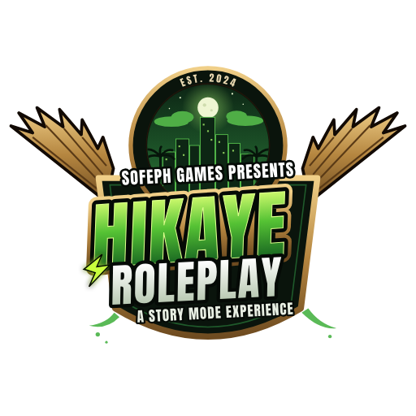

Kontrol ediliyor…
Hazırlık listesi
Başlat'a basınca eksik olmayan her şey otomatik yapılır: oyun kopyası hazırlanır, yapay zekâ sunucusu açılır, GTA V başlar. Orijinal GTA V klasörüne hiçbir şey yazılmaz.

Başlat'a basınca eksik olmayan her şey otomatik yapılır: oyun kopyası hazırlanır, yapay zekâ sunucusu açılır, GTA V başlar. Orijinal GTA V klasörüne hiçbir şey yazılmaz.